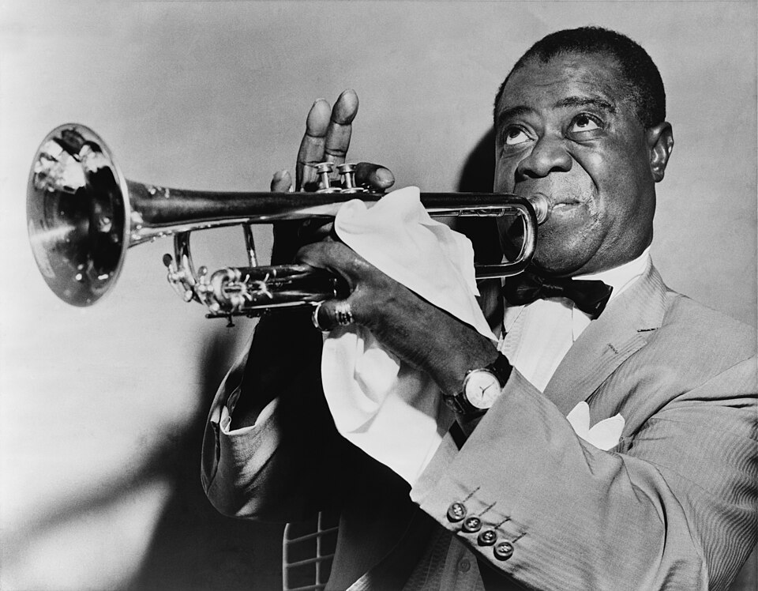

This blog borrows its name, "What a Wonderful World~", from this song. So when it came to the first music post, the choice was obvious. It's the one where Louis Armstrong, in that gravelly, warm voice, sings about how wonderful the world is. Today you hear it everywhere — at weddings and graduations, in commercials and films. But did you know that when it first came out, it was very nearly thrown away?
A song written for one man

Two people wrote the song: Bob Thiele, a producer at ABC Records, and the songwriter George David Weiss. Thiele put the name "George Douglas" on it instead of his own. Weiss later said he wrote it with Louis Armstrong in mind from the very start — he was moved by Armstrong's gift for bringing people of every color together in one room.
In 1967, America was in turmoil over racial conflict and protests against the Vietnam War. That was the moment they chose to make a song saying the world is beautiful anyway. Armstrong reportedly liked the demo before he'd even heard it to the end.
2 a.m. in a Las Vegas studio
The recording took place in Las Vegas on August 16, 1967, after Armstrong finished his midnight show at the Tropicana Hotel. The session at a nearby studio began around 2 a.m. and wrapped up around 6 in the morning. Twice, the horn of a passing freight train ruined a take and the orchestra had to start over from the top — and each time, Armstrong just laughed it off.
The real drama, though, came from somewhere else. Larry Newton, the president of ABC Records, dropped by the studio for a photo shoot, heard a slow ballad, and got angry. What he wanted was something upbeat like Armstrong's big hit "Hello, Dolly!" When he tried to stop the session, he was shown out of the studio and the door was locked behind him, the story goes. They finished the recording with the boss shut outside.
Armstrong is said to have taken only the union minimum of $250 for the session, so that the orchestra members who stayed up all night with him could get paid for their overtime.
Fewer than 1,000 copies sold in America
Still fuming, the label boss did almost nothing to promote the record in the United States. As a result, it reportedly sold fewer than 1,000 copies there in 1967 and barely registered on the Billboard charts.
Britain was a different story. In April 1968 it went to No. 1 on the UK Singles Chart. Armstrong was 66 at the time, which also made him the oldest male artist ever to top the UK chart.
Reborn on screen twenty years later
The song only found its moment in America long after Armstrong's death in 1971. In 1987 it was used in the Robin Williams film Good Morning, Vietnam. Reissued as a single, it climbed to No. 32 on the Billboard Hot 100 in February 1988 — a success twenty years late.
It was inducted into the Grammy Hall of Fame in 1999, and in 2020 it finally got its first official music video. That's the video behind the play button above: a stop-motion animation shot frame by frame on small handmade sets.
"It's not the world that's bad…"
The song often drew the comeback, "What's so wonderful about the world these days?" When Armstrong re-recorded it in 1970, he added a short spoken introduction. His point was that the world itself isn't bad — the trouble is what we're doing to it. And if we just give it a chance, he said, the world really would be a wonderful place.
The world is wonderful not because it already is, but because we can make it so — maybe that's why this song has been loved for so long.
At a glance
| Song | What a Wonderful World |
|---|---|
| Performed by | Louis Armstrong (1901–1971) |
| Written by | Bob Thiele (as "George Douglas") and George David Weiss |
| Recorded | August 16, 1967, Las Vegas |
| Charts | UK No. 1 (April 1968), US Billboard No. 32 (1988 reissue) |
| Also | Grammy Hall of Fame (1999), first official music video (2020) |
What this song means to me
Wherever you are and whatever you're doing, the moment you hear this song I think you'll feel a kind of magic — your heart settles, and then settles even more. When life gets busy, it's easy to forget what color the sky is, or what the face of the person next to you looks like. Put this song on at times like that, and for a moment you find yourself looking around again. I hope this blog can be that kind of place, too.
Sources: Wikipedia "What a Wonderful World", the Louis Armstrong House Museum, Universal Music press materials, and others. The lyrics are not included for copyright reasons.